“…việc gì có lợi cho dân phải hết sức làm, việc gì có hại cho dân phải hết sức tránh.”
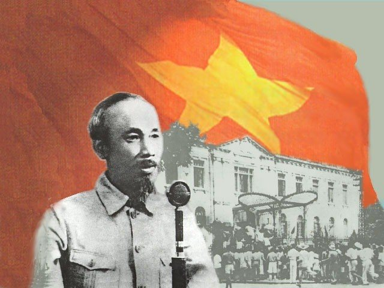
Bác đọc Tuyên ngôn độc lập (2/9/1945)
13ảnh tư liệu
3phim tư liệu
6trích dẫn
10câu trắc nghiệm
Tổng quan thành tố
Hệ thống quan điểm toàn diện, sâu sắc về cách mạng Việt Nam
Vận dụng, phát triển sáng tạo chủ nghĩa Mác – Lênin
Nền tảng định hướng cho đạo đức, phương pháp, phong cách
Độc lập dân tộc gắn liền với chủ nghĩa xã hội
Độc lập phải gắn với tự do, ấm no, hạnh phúc
“Ham muốn tột bậc”
Nhân tố quyết định thắng lợi của cách mạng
Đảng là đạo đức, là văn minh
Không có lợi ích nào khác ngoài lợi ích Nhân dân
Tư tưởng Hồ Chí MinhNền tảng tư tưởng, kim chỉ nam hành động
Đại đoàn kết toàn dân tộc là chiến lược
Kết hợp sức mạnh dân tộc với sức mạnh thời đại
Đoàn kết quốc tế
Dân là gốc; dân chủ là giá trị cốt lõi
“Việc gì có lợi cho dân…”
Cán bộ là công bộc của dân
Văn hóa soi đường cho quốc dân đi
Đạo đức là gốc của người cách mạng
Chiến lược “trồng người” – con người vừa là mục tiêu, vừa là động lực
Ảnh tư liệu
1
Tìm đường cứu nước – độc lập dân tộc gắn liền với chủ nghĩa xã hội (1911 – 1920)
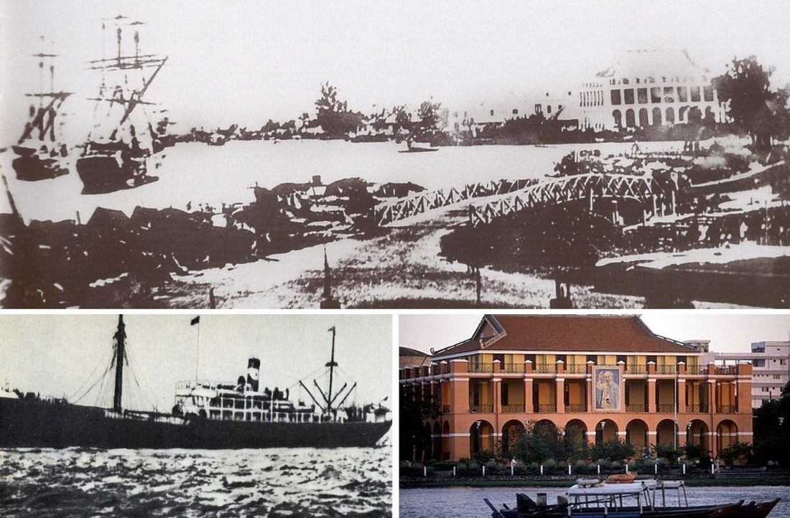
Bến cảng Nhà Rồng – nơi Nguyễn Tất Thành ra đi tìm đường cứu nước (5/6/1911)Người thanh niên Nguyễn Tất Thành làm phụ bếp trên tàu Đô đốc Latouche-Tréville, sang phương Tây tìm đường cứu nước.
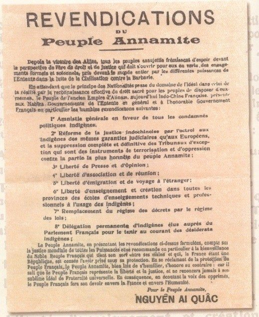
Bản Yêu sách của nhân dân An Nam (18/6/1919)Bản yêu sách 8 điểm ký tên Nguyễn Ái Quốc gửi tới Hội nghị Véc-xây, đòi các quyền tự do, dân chủ, bình đẳng cho nhân dân Việt Nam.
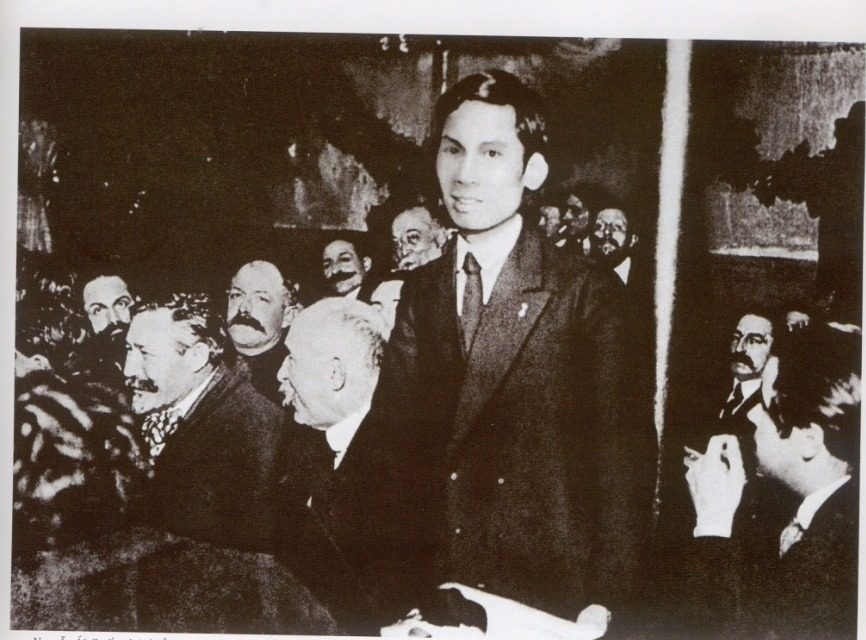
Nguyễn Ái Quốc tham luận tại Đại hội Tua (12/1920)Người biểu quyết tán thành Quốc tế III, tham gia sáng lập Đảng Cộng sản Pháp – từ người yêu nước trở thành người cộng sản.
2
Chuẩn bị và thành lập Đảng Cộng sản Việt Nam (1925 – 1930)
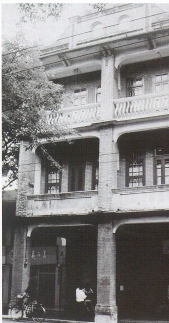
Ngôi nhà số 13/1 đường Văn Minh, Quảng ChâuTrụ sở Hội Việt Nam Cách mạng Thanh niên (1925) – tổ chức chuẩn bị trực tiếp về tư tưởng, chính trị, tổ chức cho sự ra đời của Đảng.
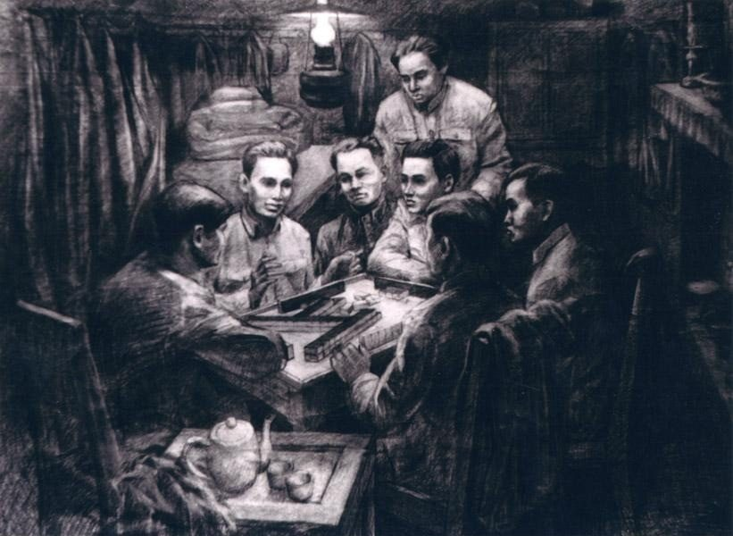
Hội nghị thành lập Đảng (2/1930)Hội nghị họp tại Cửu Long (Hương Cảng, Trung Quốc) do Nguyễn Ái Quốc chủ trì (tranh minh họa).
3
Nhà nước của dân, do dân, vì dân (1945 – 1946)
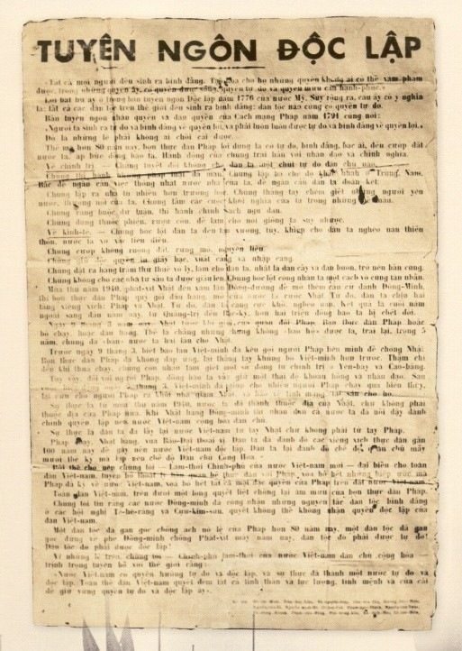
Bản Tuyên ngôn độc lập (2/9/1945)Văn kiện khai sinh nước Việt Nam Dân chủ Cộng hòa, khẳng định quyền độc lập, tự do của dân tộc.
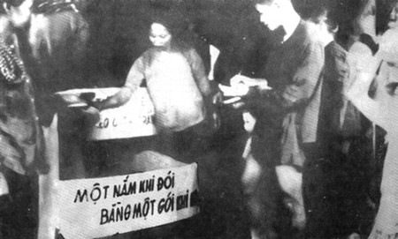
Phong trào hũ gạo cứu đói (1945)Hưởng ứng bài “Sẻ cơm nhường áo” của Hồ Chủ tịch đăng trên báo Cứu quốc số 53 ngày 28/9/1945, nhân dân cả nước nhường cơm sẻ áo cứu đói.
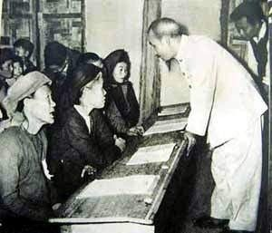
Bác Hồ thăm lớp bổ túc văn hóa Lương YênChủ tịch Hồ Chí Minh thăm, động viên học viên lớp bổ túc văn hóa. Phong trào diệt “giặc dốt” đạt kết quả to lớn: năm 1946 có 2,5 triệu người thoát nạn mù chữ; đến năm 1952 có 10 triệu người, chiến dịch xóa nạn mù chữ cơ bản hoàn thành.
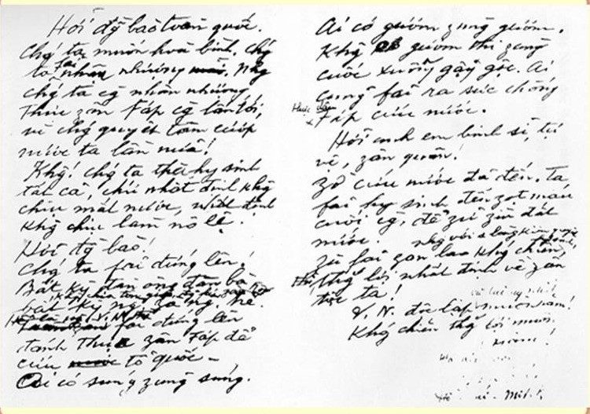
Bút tích Lời kêu gọi toàn quốc kháng chiến (19/12/1946)Thủ bút của Chủ tịch Hồ Chí Minh kêu gọi toàn dân đứng lên bảo vệ nền độc lập, thể hiện quyết tâm thà hy sinh tất cả chứ nhất định không chịu mất nước.
4
Xây dựng chủ nghĩa xã hội – dân là gốc (1958 – 1961)
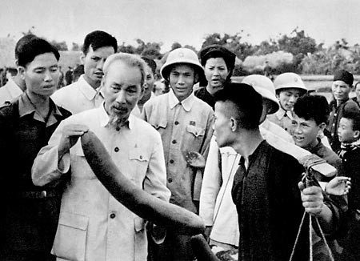
Bác Hồ thăm nông dân xã Ái Quốc, tỉnh Hải Hưng (1958)Bác xuống tận đồng ruộng, hỏi han việc sản xuất, đời sống của bà con nông dân (tư liệu gốc ghi năm “1858”, là lỗi đánh máy).
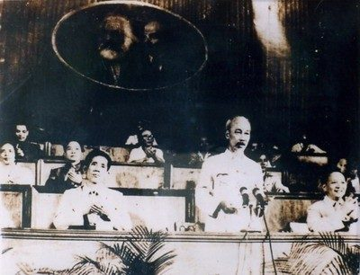
Đại hội đại biểu toàn quốc lần thứ III của Đảng (9/1960)Đại hội đề ra đường lối cách mạng hai miền: xây dựng chủ nghĩa xã hội ở miền Bắc, đấu tranh giải phóng miền Nam.Bà con Pác Bó gặp lại Chủ tịch Hồ Chí Minh (20/2/1961)Bà con Pác Bó, Cao Bằng vô cùng xúc động khi gặp lại Bác sau 20 năm xa cách.
5
Bồi dưỡng thế hệ cách mạng cho đời sau (1965 – 1969)
Bản Di chúc của Chủ tịch Hồ Chí MinhTừ năm 1965 đến năm 1969, Người viết và bổ sung Di chúc – văn kiện kết tinh tư tưởng, đạo đức, tình cảm của Người. Bên trái: chân dung và bút tích Di chúc (ảnh ghép); bên phải: sách “Di chúc của Chủ tịch Hồ Chí Minh”.
Phim tư liệu
Phim tư liệu đang được cập nhật
Trích dẫn, tác phẩm của Bác
Trích dẫn · Tư tưởng Hồ Chí Minh
Bấm vào trích dẫn hoặc ảnh để phóng to
Mạch trích dẫnSáu trích dẫn đi theo mạch
01Mục tiêu độc lập, tự do, hạnh phúc
02Đảng vì dân
03Nhà nước, cán bộ vì dân
04Nền tảng lý luận
05Chiến lược “trồng người”
011/1946
Ham muốn tột bậc của Hồ Chí Minh
Độc lập dân tộc phải gắn liền với tự do, ấm no, hạnh phúc của nhân dân – cốt lõi của tư tưởng độc lập dân tộc gắn liền với chủ nghĩa xã hội (Giáo trình, Chương 2, 3).
“
Tôi chỉ có một sự ham muốn, ham muốn tột bậc, là làm sao cho nước ta được hoàn toàn độc lập, dân ta được hoàn toàn tự do, đồng bào ai cũng có cơm ăn áo mặc, ai cũng được học hành.
02
Đảng không có lợi ích nào khác ngoài lợi ích của Nhân dân
Bản chất, mục đích của Đảng cầm quyền: Đảng là đạo đức, là văn minh, vì dân phục vụ (Giáo trình, Chương 4).
“
Đảng ta, Chính phủ ta ngoài lợi ích của Nhân dân, không có lợi ích nào khác, nên cán bộ, đảng viên trong và ngoài Đảng phải một lòng, một dạ phục vụ Nhân dân, phục vụ giai cấp.
031945
Việc gì có lợi cho dân phải hết sức làm
Nhà nước của dân, do dân, vì dân; dân là gốc; mọi chủ trương, việc làm phải xuất phát từ lợi ích của nhân dân (Giáo trình, Chương 6).
“
Việc gì có lợi cho Nhân dân, ta phải hết sức làm. Việc gì có hại đến dân ta phải hết sức tránh.
04
Cán bộ phải thiết thực quan tâm đến đời sống Nhân dân
Xây dựng đội ngũ cán bộ của Nhà nước vừa có đức, vừa có tài, gắn bó với nhân dân (Giáo trình, Chương 6).
“
Cán bộ phải ra sức học tập văn hóa và chính trị, phải gương mẫu trong công tác và sản xuất, phải thiết thực quan tâm đến đời sống của Nhân dân.
05
Học tập lý luận để giữ vững lập trường
Tư tưởng Hồ Chí Minh là sự vận dụng, phát triển sáng tạo chủ nghĩa Mác - Lênin; học tập lý luận là nền tảng định hướng cho đạo đức, phương pháp, phong cách (chuyên đề toàn khóa Đại hội XIV).
“
Có học tập lý luận Mác - Lênin mới củng cố được đạo đức cách mạng, giữ vững lập trường, nâng cao sự hiểu biết và trình độ chính trị, mới làm được tốt công tác Đảng giao phó cho mình.
0613/9/1958
“Trồng người” – sự nghiệp trăm năm
Con người vừa là mục tiêu, vừa là động lực của cách mạng; xây dựng con người mới là chiến lược lâu dài (Giáo trình, Chương 7, mục 3.2.2).
“
Vì lợi ích mười năm thì phải trồng cây, vì lợi ích trăm năm thì phải trồng người.